phone-net-ICKS v0.9.1 ALERT GAP edition · caregiver field guide
THE ALERT GAP
Family caregivers paid through a fiscal agent can't count on being told when a timesheet stalls. The shift just sits at "ready", unpaid, and nobody calls.

If your agency's only alert sign-up is a paper form that asks for your phone company, its text alerts may never arrive. Carriers have shut off their email-to-text gateways. AT&T's went dark June 17, 2025.
How the gap happens
Check yours: five questions to ask your agency in writing
- How do I turn on timesheet alerts without a paper form, and how long does it take?
- Do text alerts still go through carrier email gateways? If so, which carriers still work?
- Will I be told when a timesheet is not processed, with the reason and the fix?
- If a secure message opens blank, how will you resend it as plain email or a letter?
- Do you round clock-in and clock-out times? Show me the rule. (Rounding must even out over time: 29 CFR 785.48(b).)
What you can do today
- Don't rely on the alert. Check your shift status in the portal after every pay period's due date, and save a copy.
- Keep your own record of every clock-in and clock-out, every call (date, time, who, what was said), and every fax confirmation.
- Ask for answers by plain email or letter. If you have a disability, you can ask for written answers as an accommodation.
- Ask for an accessible copy (tagged PDF or plain text) of any form you can't read. Note the date you asked.
- Wages late? In Wisconsin, final wages are due by the next regular payday (Wis. Stat. § 109.03), and you can file a wage claim with the Department of Workforce Development.
- Job ended? Apply for unemployment in the first week. Only the state decides whether you qualify.
What agencies can fix
Audit your agency's PDFs yourself
We downloaded 16 PDFs from one fiscal agent's caregiver portal and checked them with veraPDF, the standard accessibility checker. None passed. Some had no language or title set, some weren't tagged at all, and the forms had to be printed, signed and faxed. phone-net-ICKS ships the same checker:
bash scripts/pape/pape_install_tools.sh # once python scripts/pape/pape_a11y_audit.py ~/Downloads/agency_pdfs/*.pdf --out ~/a11y_audit open ~/a11y_audit/REPORT.md
It runs on your Mac, and nothing is uploaded. The report lists which PDF/UA-1 rules fail, whether each file is tagged, its language and title, whether it needs OCR, and any fonts that aren't embedded.
Recording and transcribing your own calls is not a lie detector
phone-net-ICKS makes word-for-word transcripts with speaker labels, timestamps and checksums. It doesn't score honesty, stress or deception. In Wisconsin, "lie detector" rules (Wis. Stat. § 111.37) limit employers testing workers. Keep your exhibits to what was said and when, and let people listen for themselves.
This is a field guide, not legal advice. Laws differ by state; check with a lawyer or your state's labor department.